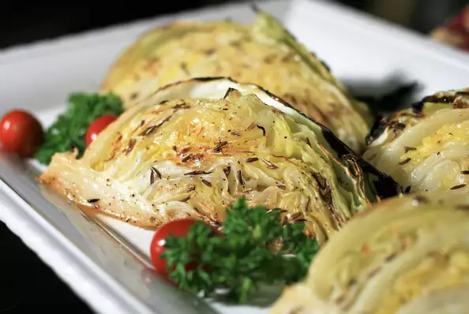

Roasted Cabbage

Roasting cabbage bring out a sweet, nutty flavor from the carmelization that you dont get from other methods.
Add fragrant caraway seeds and melted butter and you have the perfect pairing for corned beef or pot roast.
Prep: 10 mins
Cook: 25 mins
Total: 35 mins
Servings: 8
Yield: 8 servings
Ingredients
- 1 (3 pound) cabbage
- 1.5 cup melted butter
- 2 teaspoons caraway seed
- 2 teaspoons white vinegar
- salt to taste
- ground black pepper to taste
Steps
- Preheat the over to 400 degrees (200 degrees C). Line a baking sheet with parchment paper.
- Cut the head of cabbage in half vertically through the core. Cut each half into 4 wedges. Place the wedges on the baking sheet
- Combine butter, caraway seeds, and vinegar in a small bowl. Brush 1.5 of the mixture over the wedges. Seaon with salt and pepper.
- Roast in the preheated oven for 15 minutes. Gently flip the wedges, bursh with remaining butter mixture, and seaon with more salt and pepper.
Return to the oven and roast until wedges are soft and edges are lightly charred, 8 to 10 miniutes more.